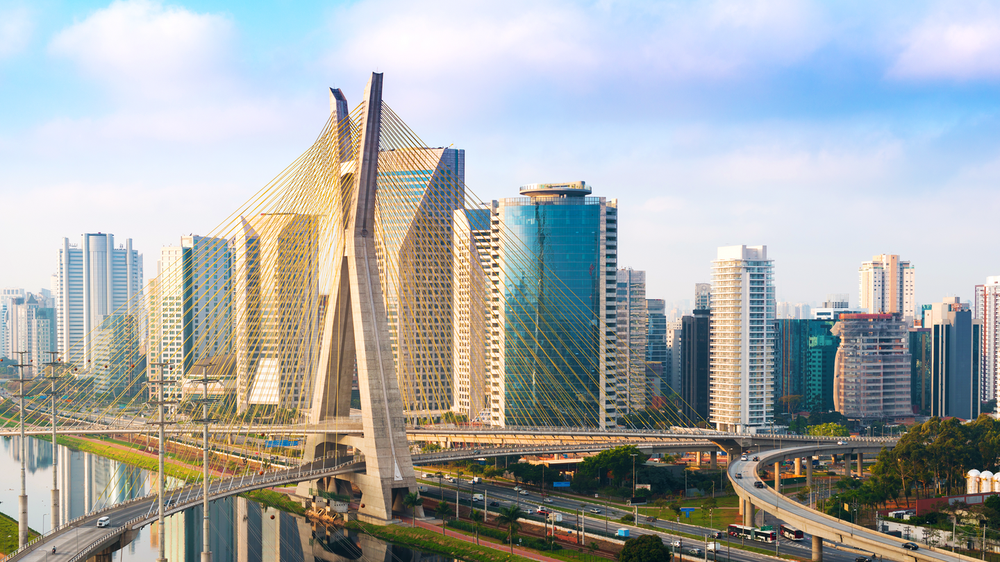

Curiosidades da Cidade
AV. PAULISTA

Segundo a Secretaria Municipal de Habitação, cerca de 12 mil pessoas vivem em edifícios residenciais no endereço mais disputado de São Paulo.
TURISTAS

São Paulo é o maior destino turístico brasileiro, com quase 13 milhões de turistas por ano.
1 MILHÃO DE PIZZAS
Ela é a segunda cidade que mais consome pizza no mundo, ficando atrás somente de Nova Iorque. Os paulistanos consomem mais de 700 pizzas por minuto.